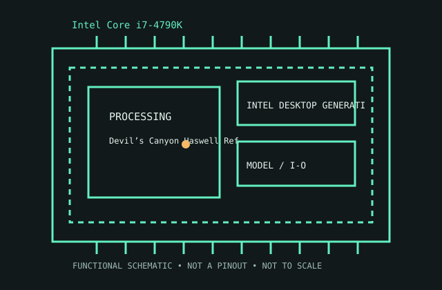

[ INTEL DESKTOP GENERATIONS // IDENTIFIED CPU ]
Intel Core i7-4790K
Devil’s Canyon Haswell Refresh, 2014. 4 cores/8 threads; 4.0/4.4 GHz base/max; 8 MB; 88 W; LGA1150; DDR3; HD 4600.

MODEL IDENTIFICATION: Intel Core i7-4790K. Match full model suffix, stepping and package to the physical item and cited documentation.
Recorded specifications
| Cataloged model | Intel Core i7-4790K |
|---|---|
| Era / family | Devil’s Canyon Haswell Refresh, 2014. |
| Model specifications | 4 cores/8 threads; 4.0/4.4 GHz base/max; 8 MB; 88 W; LGA1150; DDR3; HD 4600. |
| Compatibility | LGA1150 board BIOS specifically supports Devil’s Canyon. |
| Variants / limits | Different from 4790 non-K and 4770K. |
Compatibility and variants
- LGA1150 board BIOS specifically supports Devil’s Canyon.
- Different from 4790 non-K and 4770K.
- Check system-vendor CPU support, board revision, firmware minimum, package, memory, cooling and power before installation; similar socket naming does not prove compatibility.
Service and archival notes
Record BIOS/power limits/cooling; verify CPU list.
Archive the complete marking/OPN/sSpec, stepping, physical condition, tested host revision, firmware, memory population, cooling, and test conditions. Distinguish published limits from measurements.
Sources & further reading
- Intel ARK model lookup — Intel Core i7-4790KOfficial Intel model specification search for the cataloged product.
- Intel technical archive — Intel Core i7-4790K product familyArchived Intel-authored processor data sheets/manuals; match model and revision.
- Intel processor-history reference — Intel Core i7-4790KHistorical context for Intel processor generations; use the exact data sheet for limits.
Use the matching manufacturer data sheet revision and platform vendor’s CPU list for final fit decisions.